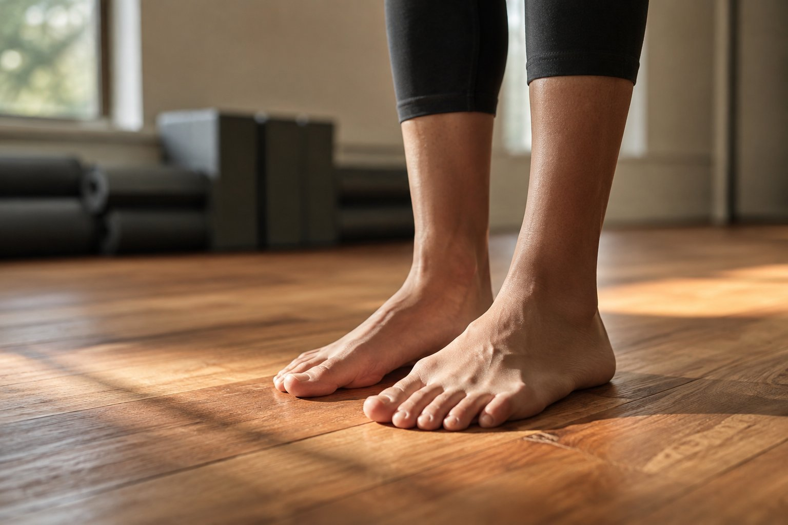

換一雙鞋走同一段路，足弓與腳底感受差在哪？
早上穿那雙好搭的鞋出門沒事，買完菜走回公寓，才發現小趾一直頂著鞋面。隔天換一雙鞋走同一段，你突然發現自己沒那麼想把腳趾蜷起來。
鞋頭空間、腳跟貼合度和鞋底的彎折感，都可能改變走路時腳底感受到的支撐。想比較鞋子，可在同一段短路試穿兩雙，留意腳趾有沒有被擠、腳跟是否滑動。腳底感受能幫你挑合腳的鞋，單憑足弓高低或鞋底磨痕，無法判斷腰膝不適的原因。

鞋跟、鞋頭和足弓支撐，先看哪一項？
先從穿起來立即看得到的線索比較。例如腳趾能不能自在活動，轉身時腳跟是否滑動，鞋墊是否只頂著一小點。若換鞋後仍反覆感到某一側落地不同，可以讀走路時怎麼觀察步態。比較時記下最先有感的位置。
👆 手機版可左右滑動
| 檢查位置 | 可以怎麼比 | 可記錄的感受 |
|---|---|---|
| 鞋頭空間 | 站起來試著自然動動腳趾。 | 是否有擠壓或想縮腳趾。 |
| 腳跟貼合 | 走一小段並轉一次身。 | 是否滑動、摩擦或容易鬆脫。 |
| 足底支撐感 | 用相近速度試走兩雙鞋。 | 壓力較平均，還是有某一點特別明顯。 |
試鞋時，怎麼避免把一種感覺當成結論？
同一次只比較一個變項，盡量在相似的路面和步速試走。足弓或足底會因受力而有感，感受也會隨鞋況改變。想回到瑜伽課的赤腳站姿，看看老師說的腳掌踩穩是在提示什麼。若鞋內有明顯磨擦，先停下來查看。
常見問題
足弓低就一定要換特殊鞋墊嗎？
足弓外觀無法單獨決定鞋墊需求。可以先看穿著感受，有持續困擾再找專業評估。
只看鞋底磨痕可以判定走路問題嗎？
鞋底磨痕可以當作觀察線索，還會受鞋材、穿著時間和使用情境影響。
記下你最有感的時刻
先記一段熟悉的路上，哪雙鞋、哪一隻腳、哪個位置最先有感。
免費約 2 分鐘，免登入、免加 LINE。做完可用 3 天觀察卡整理日常感受。
開始免費體態訊號掃描 →